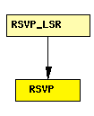

File: Network/RSVP_TE/RSVP.ned
C++ definition: click here
Implements RSVP-TE, a signalling protocol for MPLS. The module processes RSVP-TE messages, installs labels and does the reservation along LSP paths.
Paths can be specified statically in an XML config file ("traffic" parameter), or can be set up and torn down dynamically with ScenarioManager commands.
An example traffic.xml file:
<?xml version="1.0"?>
<sessions>
<session>
<endpoint>host3</endpoint>
<tunnel_id>1</tunnel_id>
<paths>
<path>
<lspid>100</lspid>
<bandwidth>100000</bandwidth>
<route>
<node>10.1.1.1</node>
<lnode>10.1.2.1</lnode>
<node>10.1.4.1</node>
<node>10.1.5.1</node>
</route>
<permanent>true</permanent>
<color>100</color>
</path>
</paths>
</session>
</sessions>
In the route, <node> stands for strict hop, and <lnode> for loose hop.
RSVP understands the "add-session" and "del-session" ScenarioManager commands. The contents of the <add-session> element can be the same as the <session> element for the traffic.xml above. The <del-command> element syntax is also similar, but only <endpoint>, <tunnel_id> and <lspid> needs to be specified.
The following is an example scenario.xml file:
<?xml version="1.0"?>
<scenario>
<at t="2">
<add-session module="LSR1.rsvp">
<endpoint>10.2.1.1</endpoint>
<tunnel_id>1</tunnel_id>
<paths>
...
</paths>
</add-session>
</at>
<at t="2.4">
<del-session module="LSR1.rsvp">
<endpoint>10.2.1.1</endpoint>
<tunnel_id>1</tunnel_id>
<paths>
<path>
<lspid>100</lspid>
</path>
</paths>
</del-session>
</at>
</scenario>
RSVP messages are subclassed from RSVPMessage, and include RSVPPathMsg, RSVPPathTear, RSVPPathError, RSVPResvMsg and RSVPHelloMsg.
RSVP-TE communicates with the following components in the system: TED, MPLS, and may receive commands from ScenarioManager.
The following diagram shows usage relationships between modules, networks and channels. Unresolved module (and channel) types are missing from the diagram. Click here to see the full picture.
If a module type shows up more than once, that means it has been defined in more than one NED file.
| RSVP_LSR | An RSVP-TE capable router. |
| Name | Type | Description |
|---|---|---|
| traffic | xml | specifies paths to set up |
| peers | string | names of the interfaces towards RSVP peers |
| helloInterval | numeric | |
| helloTimeout | numeric |
| Name | Direction | Description |
|---|---|---|
| from_ip | input | |
| to_ip | output | |
| from_mpls_switch | input | |
| from_app | input |
simple RSVP parameters: traffic : xml, // specifies paths to set up peers : string, // names of the interfaces towards RSVP peers helloInterval : numeric, helloTimeout : numeric; gates: in: from_ip; out: to_ip; in: from_mpls_switch; in: from_app; endsimple